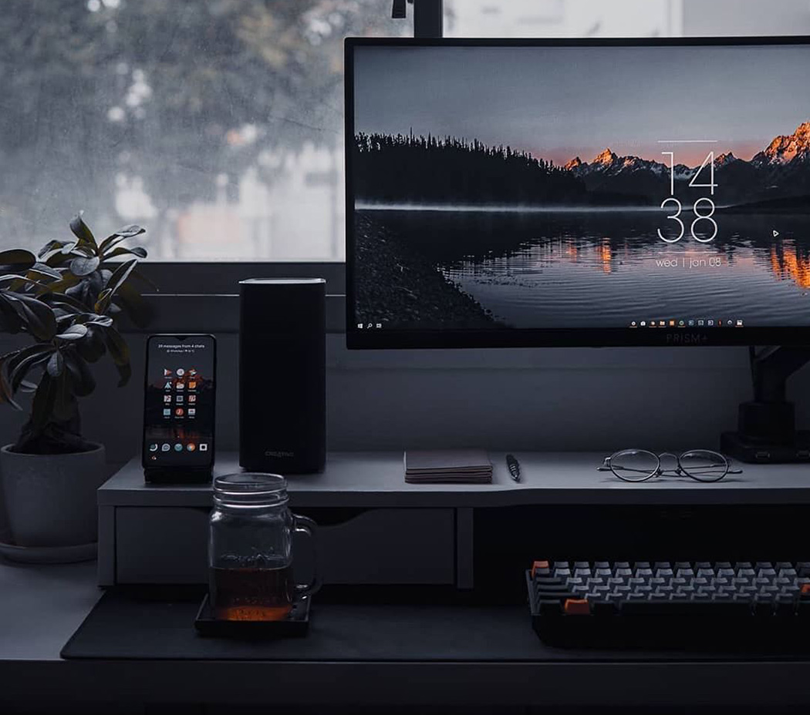
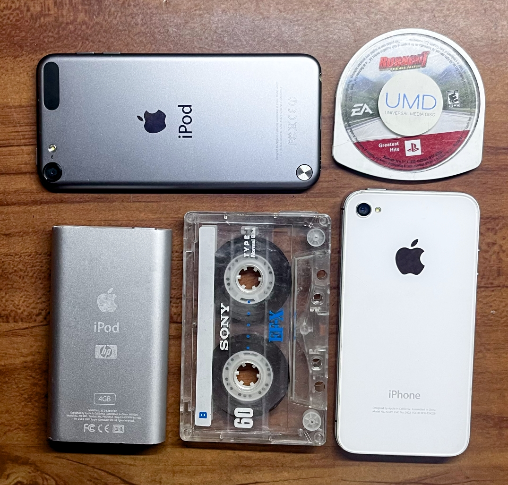

Lo que la ley no puede enseñar
El Digital Age Assurance Act llega con buenas intenciones. Pero entre sus líneas, le quita al adolescente algo que ninguna regulación puede devolver: la oportunidad de aprender a decidir.
Explorando realidades a través de la tecnología y el pensamiento crítico

El Digital Age Assurance Act llega con buenas intenciones. Pero entre sus líneas, le quita al adolescente algo que ninguna regulación puede devolver: la oportunidad de aprender a decidir.

La cultura retro nació del ingenio y la escasez. Hoy es una estética de boutique. Lo que el movimiento Return to Analog no quiere admitir sobre sí mismo.
Dos fotos del mismo bosque. Una cuesta más en bits. La otra se ve mejor:
El fondo de pantalla de 2009 que le gana a los de 2024
Soy Ángel, estudiante de Ciencia Política con interés en la intersección entre tecnología, cultura y sociedad. OCTANT es mi espacio personal para publicar ensayos, reflexiones y proyectos: desde análisis políticos hasta observaciones sobre cultura digital, consumo o fotografía. Este sitio funciona como un archivo abierto de ideas y un portafolio de trabajo, construido deliberadamente con una estructura simple para que el foco permanezca en el contenido.